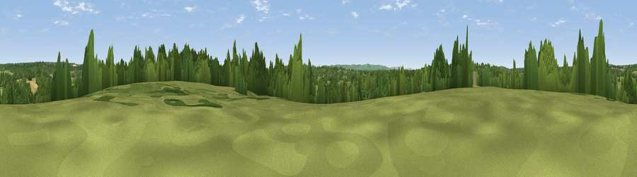

Viewpoint near Scaynes Hill
#36227 in England · top 66% of its area beats it · near Scaynes HillThe view, rendered

A 360° render of this exact spot computed from the terrain model, tree cover and land cover — summer colours, afternoon light, calibrated against photographs of famous viewpoints. Real trees, hedges and buildings will differ in detail.
The panorama
Grey silhouette: terrain skyline in each direction (720 bearings, Earth curvature and refraction included). Dashed green: skyline with trees (+15 m) and buildings (+8 m) as obstacles. Blue strip: how far the ground is visible on each bearing.
Where the view opens
Wedge length = distance to the farthest visible ground on that bearing (vegetation-aware). Rings at 10, 25 and 50 km.
What fills the view
58% grassland · 33% woodland · 7% cropland ·
Angular shares of the visible panorama (visual magnitude), not map area. Landscape diversity 0.40 (0–1 Shannon).
Key numbers
More beautiful places nearby
The staircase of upgrades: each row has a higher view potential than everything closer. Driving times are estimates from straight-line distance, calibrated against real road routing — check an actual route before setting out.
| Place | Direction | Drive | Score |
|---|---|---|---|
| Viewpoint near Danehill | NNE · 4 km | ~8 min | 45.5 |
| Viewpoint near Haywards Heath | W · 5 km | ~11 min | 47.2 |
| Viewpoint near South Chailey | S · 6 km | ~13 min | 47.4 |
| Viewpoint near Sharpthorne | NNW · 9 km | ~17 min | 48.0 |
| Viewpoint near Fairwarp | ENE · 9 km | ~18 min | 54.3 |
| Viewpoint near Upper Hartfield | NE · 11 km | ~22 min | 59.6 |
| Viewpoint near Plumpton | S · 11 km | ~22 min | 80.4 |
| Viewpoint near Westmeston | SSW · 12 km | ~22 min | 80.9 |
50.99796, -0.02159 · source: screening · position refined by local search. Computed location — check access rights before visiting.